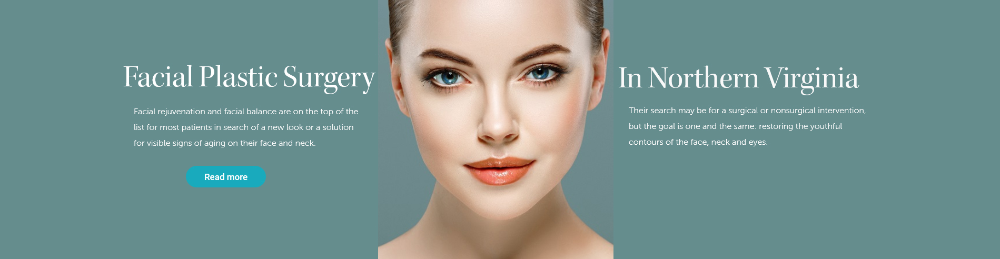

BOTOX
What is botox?
Botox is an injection that temporarily relaxes facial muscles reducing the appearance of fine lines and wrinkles as well as preventing new lines from forming. Common injection sites are the glabella(region between eyebrows), forehead and outer corners of eyes(crows feet).Treatment is fast and painless and lasts from 4 to 6 months.
Dermal Fillers
Dermal Fillers: The Procedure : Firstly the area is evaluated to decide what areas would benefit you most. Injection usually takes only a few moments per site. The process of injecting, massaging, and evaluating the result is performed, and additional filler added as needed.
Depending on the number of areas to be treated, the whole process may be as short as 15 minutes. Area is then wiped clean, if you experience a little swelling an ice pack would be recommended
Lip Fillers
TRANSFORM YOUR SMILE WITH FULLER PLUMPER LIPS...... Lip enhancement provides a fast and effective way to improve the appearance of lips. Whether you want to restore youthful plumpness, or add volume, we will tailor the delicate proportions of filler required to give you your desired result. Filler can be used in a number of ways, correcting asymmetry, increasing fullness and definition and helping to hide the tell tale creases brought about by sun or smoking.
Most Popular Cosmetic Surgeries
Copyright©- All Rights Reserved 2017